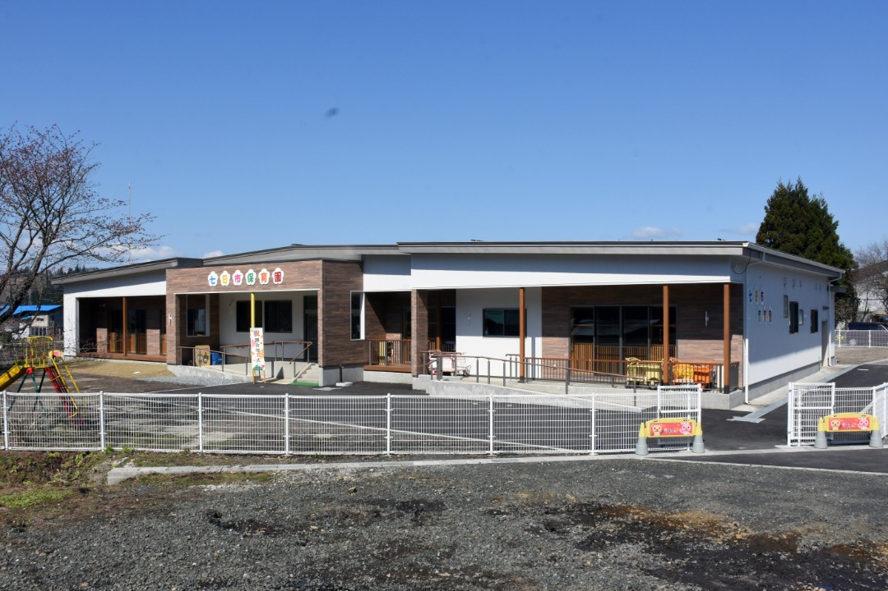
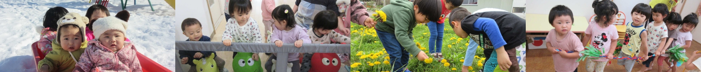
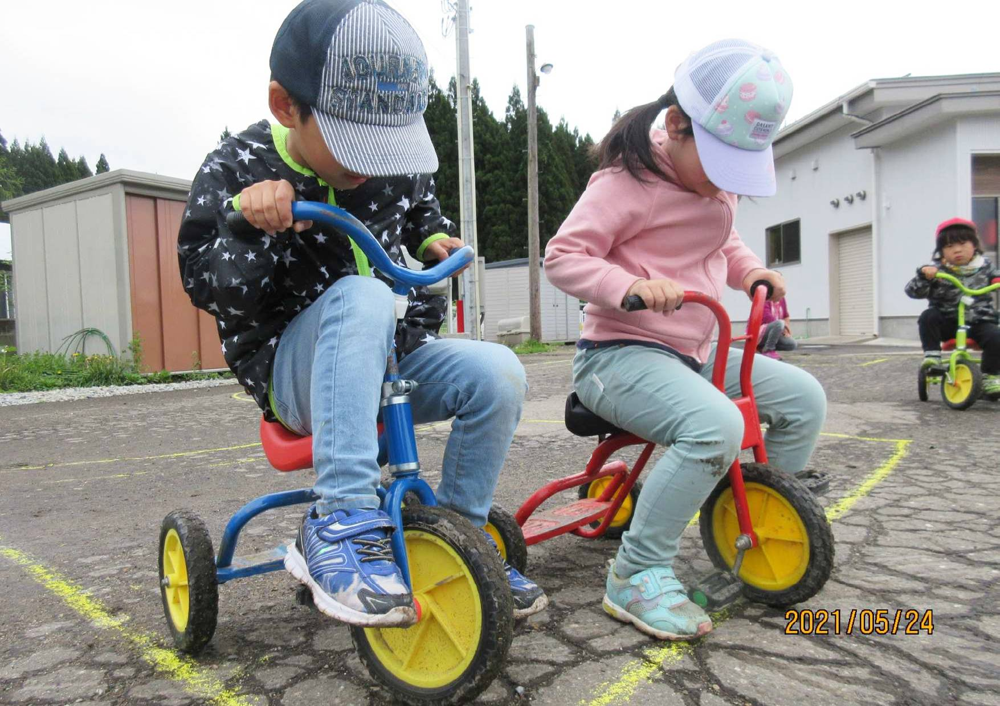

自然が近い北秋田市。
自然が多い環境でのびのび成長できる保育園です。

園の説明が入ります。園の説明テキストです。園の説明が入ります。園の説明テキストです。園の説明 が入ります。園の説明テキストです。園の説明が入ります。園の説明テキストです。園の説明が入ります。 例：2020年に園舎がリニューアルされました。より快適な環境で成長できます的な文章を想定。

保育方針
-
子どもが健康、安全で情緒が安定した生活ができる環境を用意し、
自己を十分に発揮しながら活動し、健全な心身の発達を図る。 -
小規模園の特色をいかして、家庭的で温かい雰囲気の中、
異年齢児の友だちとも安定して過ごせるようにゆったりとかかわる。 -
家庭や地域社会との連携を図りながら、保護者の思いに寄り添い、
専門的な知識と技術を持って一緒に子育てをしていく。
保育目標
「生活習慣が身につき、心身ともにたくましく、意欲的に活動できる子」
このような子どもに育てたいと目標を持っています。
- 元気で明るく生き生きした子
- 思いやりのある子
- 工夫して遊べる子
- 根気強い子
- 善悪を考えながら遊ぶ子
園の概要
| 名称 | 社会福祉法人 七日市保育園 |
|---|---|
| 所在地 | 〒018-3452 秋田県北秋田市七日市字石倉岱18 |
| TEL | 0186-66-2054 |
| 設立 | 昭和●●年 |
| 定員 | 50名 |
| 保育時間 | 平日：午前7時00分〜午後7時00分 土曜日：午前7時00分〜午後5時00分 |

お問い合わせ
保育園に関するご相談・ご意見はこちからどうぞ。
お電話でお問い合わせください。
0120-1234-1234

©2022 七日市保育園